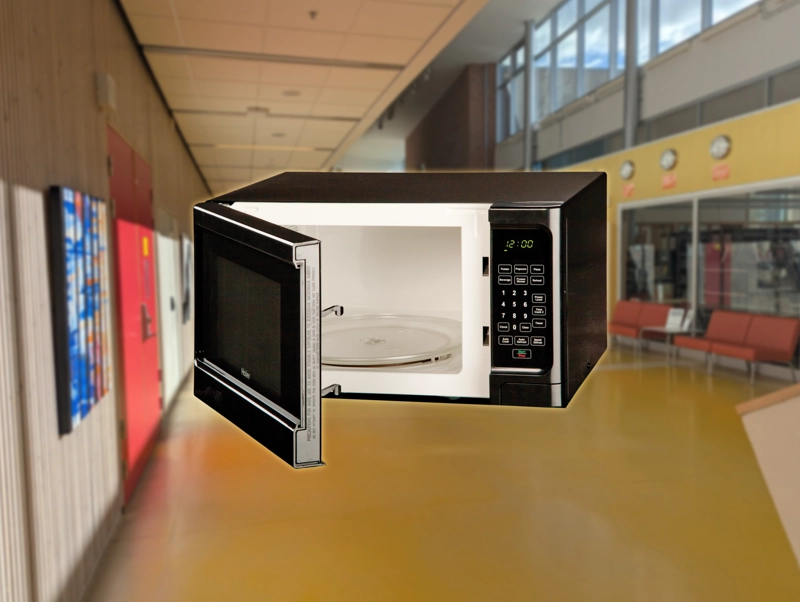

Insändare

Makt, mikro och missnöje
Tänk dig; det är torsdag, istället för den vidriga fisken har du gått och köpt en smakrik och saftig fryspizza som du ska värma i sam korridoren. Du kommer in genom dörren och går fram till där mikron stått alla år före men till din förvåning är den borta. Har den gått sönder? Varför är det ingen som har sagt något? Och varför har den inte blivit utbytt?
Kan det vara så att det inte är ett misstag utan att vår vackra Sam mikro blivit stulen. I en tid av budgetnedskärningar och lärare missnöjda med löner tror vi att de valt att flytta elevernas mikro till lärarrummet. För att hålla kvar lärare på skolan behöver de ständigt komma på nya förmåner som fika i lärarrummet, ny kaffemaskin eller nya möbler. Kan elevernas mikrovågsugn vara det nyaste tillskottet?
Vi i Sam tycker att detta är extremt upprörande, är det rättvist att vi elever ska förlora det lilla vi har för att lärarna ska kunna frossa och leva i lyx. Så vi har en uppmaning till er alla i samkorridoren. Gör revolt! Ser ni en lärare med nyvärmt kaffe så fråga ut dom och säg till alla ni känner. Sam korridoren förtjänar en mikro!
Upplaga 13
13/10/2025